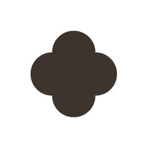
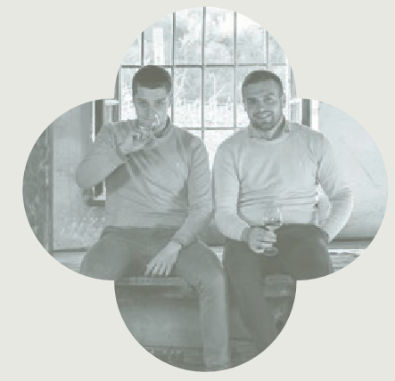
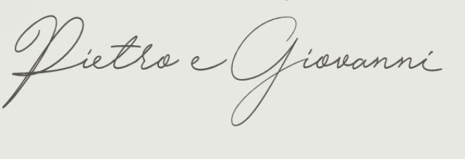
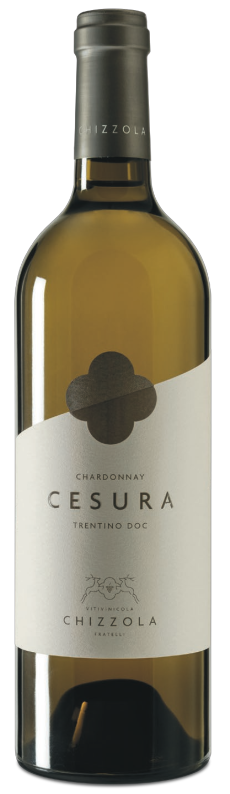
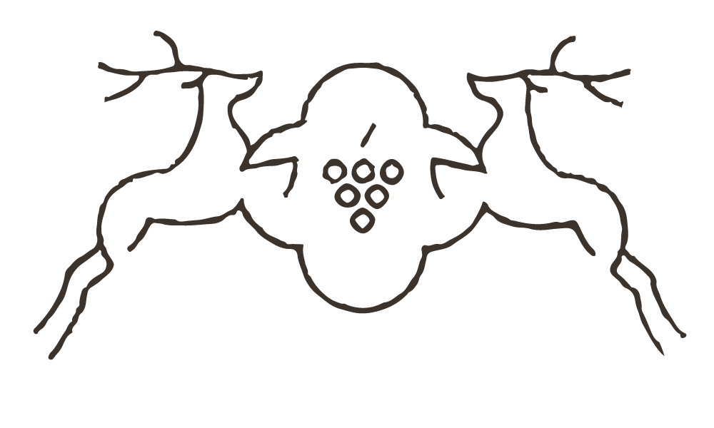

<div class="who">
    <div class="who__content">
        <div class="disegno__uno__container">
            
        </div>
    </div>
    <div class="descrizione__home">
        <h4 style="letter-spacing: 8px;">CHARDONNAY</h4>
        <h1 class="h1__medium">CESURA</h1>
        <h4 style="letter-spacing: 8px;">TRENTINO DOC</h4>
    </div>
</div>
<div class="vine__desc">
    <div class="vine__desc__p1">
        <svg class="pc__svg" width="100" height="900" xmlns="http://www.w3.org/2000/svg">
            <line x1="10" y1="40"  x2="90" y2="40"  stroke="#d1d1cd" stroke-width="1" transform="rotate(-14 10 40)" />
            <line x1="10" y1="70"  x2="90" y2="70"  stroke="#d1d1cd" stroke-width="1" transform="rotate(-14 10 70)" />
            <line x1="10" y1="100" x2="90" y2="100" stroke="#d1d1cd" stroke-width="1" transform="rotate(-14 10 100)" />
            <line x1="10" y1="130" x2="90" y2="130" stroke="#d1d1cd" stroke-width="1" transform="rotate(-14 10 130)" />
            <line x1="10" y1="160" x2="90" y2="160" stroke="#d1d1cd" stroke-width="1" transform="rotate(-14 10 160)" />
            <line x1="10" y1="190" x2="90" y2="190" stroke="#d1d1cd" stroke-width="1" transform="rotate(-14 10 190)" />
            <line x1="10" y1="220" x2="90" y2="220" stroke="#d1d1cd" stroke-width="1" transform="rotate(-14 10 220)" />
            <line x1="10" y1="250" x2="90" y2="250" stroke="#d1d1cd" stroke-width="1" transform="rotate(-14 10 250)" />
            <line x1="10" y1="280" x2="90" y2="280" stroke="#d1d1cd" stroke-width="1" transform="rotate(-14 10 280)" />
            <line x1="10" y1="310" x2="90" y2="310" stroke="#d1d1cd" stroke-width="1" transform="rotate(-14 10 310)" />
            <line x1="10" y1="340" x2="90" y2="340" stroke="#d1d1cd" stroke-width="1" transform="rotate(-14 10 340)" />
            <line x1="10" y1="370" x2="90" y2="370" stroke="#d1d1cd" stroke-width="1" transform="rotate(-14 10 370)" />
            <line x1="10" y1="400" x2="90" y2="400" stroke="#d1d1cd" stroke-width="1" transform="rotate(-14 10 400)" />
            <line x1="10" y1="430" x2="90" y2="430" stroke="#d1d1cd" stroke-width="1" transform="rotate(-14 10 430)" />
            <line x1="10" y1="460" x2="90" y2="460" stroke="#d1d1cd" stroke-width="1" transform="rotate(-14 10 460)" />
            <line x1="10" y1="490" x2="90" y2="490" stroke="#d1d1cd" stroke-width="1" transform="rotate(-14 10 490)" />
            <line x1="10" y1="520" x2="90" y2="520" stroke="#d1d1cd" stroke-width="1" transform="rotate(-14 10 520)" />
            <line x1="10" y1="550" x2="90" y2="550" stroke="#d1d1cd" stroke-width="1" transform="rotate(-14 10 550)" />
            <line x1="10" y1="580" x2="90" y2="580" stroke="#d1d1cd" stroke-width="1" transform="rotate(-14 10 580)" />
            <line x1="10" y1="610" x2="90" y2="610" stroke="#d1d1cd" stroke-width="1" transform="rotate(-14 10 610)" />
            <line x1="10" y1="640" x2="90" y2="640" stroke="#d1d1cd" stroke-width="1" transform="rotate(-14 10 640)" />
            <line x1="10" y1="670" x2="90" y2="670" stroke="#d1d1cd" stroke-width="1" transform="rotate(-14 10 670)" />
            <line x1="10" y1="700" x2="90" y2="700" stroke="#d1d1cd" stroke-width="1" transform="rotate(-14 10 700)" />
            <line x1="10" y1="730" x2="90" y2="730" stroke="#d1d1cd" stroke-width="1" transform="rotate(-14 10 730)" />
            <line x1="10" y1="760" x2="90" y2="760" stroke="#d1d1cd" stroke-width="1" transform="rotate(-14 10 760)" />
            <line x1="10" y1="790" x2="90" y2="790" stroke="#d1d1cd" stroke-width="1" transform="rotate(-14 10 790)" />
            <line x1="10" y1="820" x2="90" y2="820" stroke="#d1d1cd" stroke-width="1" transform="rotate(-14 10 820)" />
            <line x1="10" y1="850" x2="90" y2="850" stroke="#d1d1cd" stroke-width="1" transform="rotate(-14 10 850)" />
        </svg>
    </div>
    <div class="vine__desc__p2">
        <div class="vine__desc__p2__up">
            <div>
                <section>
                    <a class="f__A">VARIETÀ UVA</a><a> / Chardonnay</a>
                </section>
                <section>
                    <a class="f__A">ANNO</a><a> / 2022</a>
                </section>
            </div>
            <div>
                <section>
                    <a class="f__A">TIPOLOGIA TERRENO</a><a> / Terreno franco sabbioso</a>
                </section>
                <section>
                    <a class="f__A">ESPOSIZIONE</a><a> / NORD - EST</a>
                </section>
                <section>
                    <a class="f__A">ANNO IMPIANTO</a><a> / 1983</a>
                </section>
            </div>
            <div>
                <section>
                    <a class="f__A">COLORE</a><a> / Giallo paglierino</a>
                </section>
                <section>
                    <a class="f__A">VINIFICAZIONE E AFFINAMENTO</a><a> / Vinificato e affinato
                    in acciaio e legno di rovere francese. Segue un affinamento in bottiglia</a>
                </section>
                <section>
                    <a class="f__A">CARATTERISTICHE ORGANOLETTICHE</a><a> / Vino sapido,
                    intenso e persistente, con sentori di frutta matura, frutta secca e floreali</a>
                </section>
            </div>
            <div>
                <section>
                    <a class="f__A">GRADO ALCOLICO</a><a> / 13,5</a>
                </section>
                <section>
                    <a class="f__A">TEMPERATURA DI SERVIZIO</a><a> / 12°C</a>
                </section>
            </div>
        </div>
        <div>
            <div class="little__frase">
                
                <div>
                    <section>
                        <span>"Abbiamo riscoperto la bellezza di questo lavoro e l'amore per il vino, una passione che risale al bisnonno Guido. Oggi coltiviamo gli stessi terreni, dando vita ad un vino che racconta di un tempo passato e di un nuovo inizio."</span>
                    </section>
                    <section>
                        
                    </section>
                </div>
            </div>
        </div>
    </div>
    <div class="vine__desc__p3">
        
    </div>
</div>
<div class="descrizione__home dh_second">
    <div>
        
        <h4 style="letter-spacing: 8px;">VITIVINICOLA</h4>
        <h1 class="h1__medium">CHIZZOLA</h1>
        <h4 style="letter-spacing: 8px;">FRATELLI</h4>
    </div>
    <div style="margin-top: 8vw !important;">
        <a>Via della Terra Nera, 22 - Mori, Italia</a>
    </div>
</div>